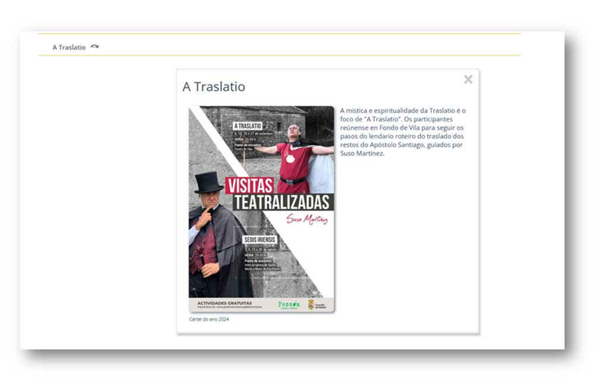

Lecer

En lecer atopamos un calendario por meses no que en cada mes temos os diferentes eventos que hai en cada un dos concellos, se pinchamos nos enlaces aparece o cartel xunto con un pequeno resumo.